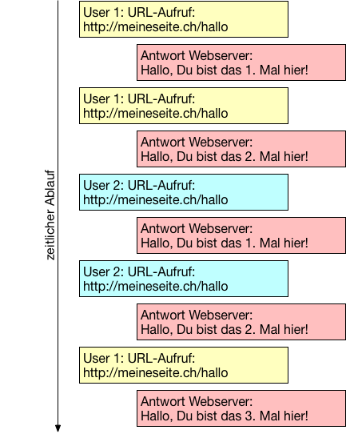
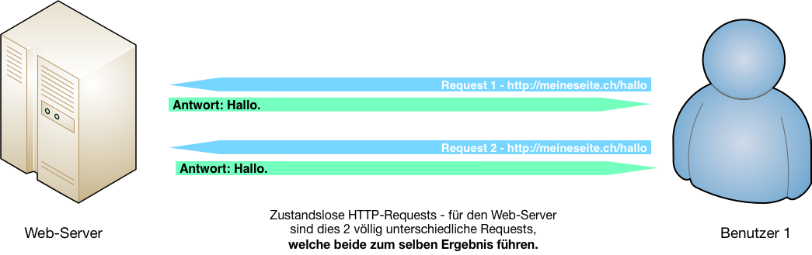
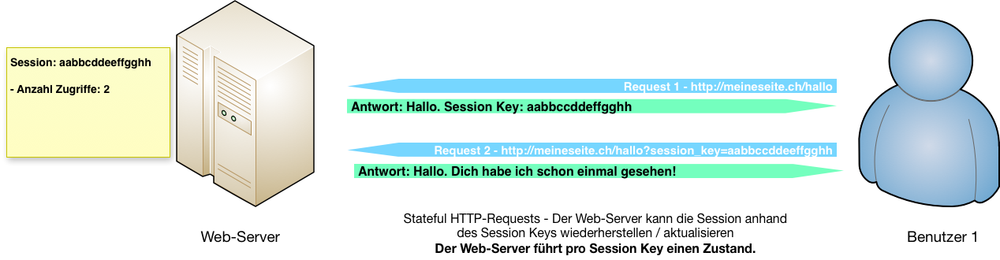
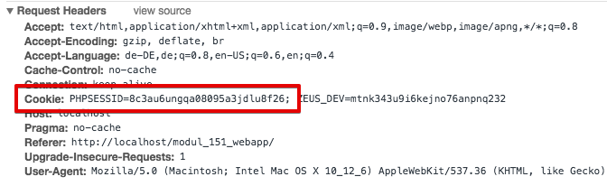

{% extends "../_base_template.html" %}
{% block title %}Lektion 8 - State, Sessions{% endblock %}

{% block sections %}
<section data-markdown>
<textarea data-template>
<i class="fas fa-graduation-cap"></i> M151 - DB in Web-App einbinden
=============================

Heutiges Ziel
--------------

* Input zu den Kurzreferaten zu Web-Bedrohungen
* Sie wissen, was „Stateless“ und „Stateful“ für eine Web-Applikation bedeutet
* Sie wissen, wofür Stateful Sessions benötigt werden
* Sie können eine stateful Session in PHP aufbauen und benützen


</textarea>
</section>

<section data-markdown>
<textarea data-template>
<i class="fas fa-graduation-cap"></i> Kurzreferate zu "Web-Bedrohungen"
=============================

Siehe Aufgabenblatt auf Moodle: "Aufgabe Referat 'Web-Bedrohungen'

**Themen:**

* SQL - Injection
* Cross Site Scripting (XSS)
* Session Hijacking
* Directory Traversal Attack
* Cross Site Request Forgery (CSRF)
* Brute Force Attacks

**Ziel:**

Sie kennen die Gefahr einer Web-Bedrohung und können Gegenmassnahmen ergreifen.
Sie können die Bedrohung sowie die Gegenmassnahme erklären.

Wir losen die Themen aus.

**Vorträge:**

* 14.11.2018 (3x)
* 21.11.2018 (3x)

</textarea>
</section>


<section data-markdown>
<textarea data-template>
<i class="fas fa-graduation-cap"></i> State, Sessions
=============================

Stellen sie sich folgendes Szenario eines Seitenaufrufs im Internet von zwei unterschiedlichen Benutzern vor:




**Fragen:**

* Sieht das HTTP-Protokoll eine Client-Identifizierung vor? Wenn ja, wie?
* Dies sind ja mehrere Requests. Wie kann die Applikation über mehrere Requests hinweg Informationen über bestimmte Clients "aufbewahren"?
* Was setzt dies auf der Server-Seite voraus?
* Was setzt dies auf der Client (User, Browser)-Seite voraus?

</textarea>
</section>

<section data-markdown>
<textarea data-template>
<i class="fas fa-graduation-cap"></i> Stateless vs. Stateful
=============================

Ein **„State“** ist ein **Zustand zu einer bestimmten Zeit** – Bestimmte Werte, welche zu einer bestimmten Zeit gelten. Werden diese Werte geändert, spricht man von einem neuen Zustand, von einem neuen „State“.

Das oben gezeigte Szenario bedingt, dass auf dem Server pro User / pro Client ein „State“, ein Zustand festgehalten wird – Der Server muss also wissen, ob der User/der Client bereits hier war.

Dies wiederum bedeutet, dass der Request einem bestimmten Benutzer, einem bestimmten State zugeordnet werden muss.

Das HTTP-Protokoll grundsätzlich ist stateless – zustandslos: Das Protokoll sieht **KEINEN** Mechanismus vor, um einen Request einem bestehenden State zuzuordnen! Jeder HTTP-Request ist für den Web-Server wieder ein neuer Request.



<i class="far fa-hand-point-right"></i> **Ein HTTP-Request ist also grundsätzlich zustandslos – stateless!**

</textarea>
</section>


<section data-markdown>
<textarea data-template>
<i class="fas fa-graduation-cap"></i> Stateless vs. Stateful
=============================

**Stateful** wiederum bedeutet, dass sich der Web-Server den „Zustand“ der Kommunikation mit einem
bestimmten Benutzer merkt: Er „weiss“, dass derjenige schon einmal da war, dass er sich eingeloggt hat,
dass er die Seite schon 5 mal aufgerufen hat.

Nur: Wie lässt sich dies bewerkstelligen, wenn das HTTP-Protokoll dies nicht vorsieht?


<i class="far fa-hand-point-right"></i> **Frage**: Haben Sie eine Idee, wie Sie bewerkstelligen könnten,
dass HTTP-Requests „identifiziert“ und somit auf dem Server einem State zugeordnet werden können?
Skizzieren Sie einen möglichen Lösungsansatz!

</textarea>
</section>

<section data-markdown>
<textarea data-template>
<i class="fas fa-graduation-cap"></i> Stateless vs. Stateful
=============================

**Lösung: Stateful Sessions mittels Session-Key**

Der einzige Weg, einen Benutzer wieder zu erkennen, führt über eine Art „Ticket“, eines so genannten „Session Key“:

* Beim ersten Zugriff (oder beim Aufbau einer Session) liefert der Server einen für den Benutzer eindeutigen „Session Key“,
  einen Schlüssel also, oder ein „Ticket“.
* Bei jedem weiteren Request, welche der User tätigt, muss dieser (resp. sein Browser) diesen Session Key wieder mitliefern:
 Anhand dieses Session Keys „weiss“ der Server, um welche Session es sich handelt,
 und kann den aktuellen State wiederherstellen.



**Was können wir damit tun?**

* Wir können festhalten, ob sich ein Benutzer eingeloggt hat – hat er sich erfolgreich mit Passwort angemeldet, verzeichnen wir dies in der Session – beim nächsten Aufruf „weiss“ der Server, wer dies ist.
* Wir können beliebige Werte für diese Session festhalten, z.B. wie lange die Session schon besteht, Zustände der Web-Applikation wie z.B. Inhalt eines Warenkorbes, Zustand eines Menus (auf- / zugeklappt) etc.
</textarea>
</section>

<section data-markdown>
<textarea data-template>
<i class="fas fa-graduation-cap"></i> Stateless vs. Stateful
=============================

**Wie wird der Session Key übermittelt?**

Es gibt verschiedene Wege, wie nun der Session Key übermittelt werden kann. Eine Möglichkeit, welche sich etabliert hat und fester Bestandteil von Browsern und PHP ist, ist via „Session Cookie“:

Ein Cookie ist ein Textschnippsel, welcher die besuchte Webseite / der Web-Server im Browser des Users „platziert“. Das Cookie wird vom Web-Server erzeugt und als Antwort auf einen Request im HTTP-Header mitgeschickt.
Der Web-Browser sendet nun den Inhalt dieses Text-Schnippsels **bei allen weiteren Requests** zu dieser Web-Seite automatisch wieder mit, ebenfalls als Teil des HTTP-Headers.



Der Web-Server sendet in diesem Fall den **Session Key in einem Cookie** an den Browser. Bei jedem Request sendet der Browser dieses Cookie wieder mit, und der Server kann so die Session identifizieren und den State der Session laden / wiederherstellen.

</textarea>
</section>

<section data-markdown>
<textarea data-template>
<i class="fas fa-graduation-cap"></i> Stateless vs. Stateful
=============================

**Sessions und State in PHP**

Die Session- und somit State-behandlung ist fester Teil von PHP und sehr einfach zu bedienen.
PHP kann somit sehr einfach „stateful Requests“ anbieten.

** Session starten / wiederherstellen **

Eine Session wird in PHP mittels `session_start()` gestartet resp. wiederhergestellt:

```php
<?php
// Starten / wiederherstellen der Session:
// Mit dieser Anweisung wird eine neue Session gestartet (Session Cookie an Browser ausgegeben),
// ODER eine bestehende Session wiederhergestellt (Session-Cookie vom Request ausgelesen).
session_start();

// Session-ID ausgeben:
echo session_id();
```

<i class="far fa-hand-point-right"></i> Die Session-ID wird nun jeweils via Cookie im HTTP-Header beidseitig (Server, Browser) übertragen.

**Achtung**: `session_start()` muss aufgerufen werden, **bevor** eine andere Ausgabe an den Browser startet (z.B. mit echo()):
Eine Ausgabe mit z.B. echo() schliesst den HTTP-Header ab. Da das Session cookie als Teil des HTTP-Headers mitgeschickt wird, würde dieses nicht mehr korrekt ausgeliefert.
</textarea>
</section>

<section data-markdown>
<textarea data-template>
<i class="fas fa-graduation-cap"></i> Stateless vs. Stateful
=============================

** Session-Daten lesen und schreiben in PHP**

Ist die Session gestartet / geladen, können Daten in die Session / den State geschrieben / gelesen werden:

```php
<?php
session_start();

// Auslesen der Session-Variable 'counter':
if (!isset($_SESSION['counter'])) {
    echo "<p>Hallo, Fremder, Du bist das erste mal hier!</p>";
    // Setzen der Session-Variable 'counter':
    $_SESSION['counter'] = 1;
} else {
    echo "<p>Hallo, Dich habe ich schon {$_SESSION['counter']} mal gesehen!</p>";
    $_SESSION['counter']++;
}
```

So können Daten „über mehrere Requests“ hinweg festgehalten werden.

</textarea>
</section>

<section>
<section data-markdown>
<textarea data-template>
<i class="fas fa-graduation-cap"></i> komplettes Beispiel: Login
=============================

Das folgende Beispiel zeigt einen Login-Vorgang: Bei erfolgreichem Login wird der Benutzer
in der Session festgehalten, und beim erneuten Aufruf geprüft.

Der folgende LoginController ist auf 3 Folien aufgeteilt und zeigt die Routen `/login` (Login-Form), `/loginTry` (Login wird überprüft),
`/welcome` (Willkommen nach erfolgreichem Login) sowie `/logout` (Ausloggen). Die HTML-Ausgabe wird direkt als Inlinle-HTML-
Gemacht (nicht zu empfehlen, nur der Einfachheit halber so gewählt).


```php
<?php
namespace M151\Controller;

use M151\Http\Request;
use M151\View\View;
use M151\Application;

// Beispiel-Controller: Siehe diese und nachfolgende Folien
class LoginController extends Controller {
    /**
     * Ein HTML-Formular ausliefern (Route: /login)
     */
    public function loginForm(Request $req) {
        $error = '';
        if (!empty($_SESSION['login_error'])) {
            $error = "<div style='background-color: red'>{$_SESSION['login_error']}</div>";
        }
        $loginSubmitUrl = $this->routeUrl('/login_try');
        echo <<<EOT
<html>
<body>
    <h1>Login</h1>
    {$error}
    <form action="{$loginSubmitUrl}" method="POST">
        <label>Username: <input type="text" name="login"></label>
        <label>Passwort: <input type="password" name="passwort"></label>
        <button type="submit">login</button>
    </form>
</body>
</html>
EOT;
    }
}
```
</textarea>
</section>

<section data-markdown>
<textarea data-template>
<i class="fas fa-graduation-cap"></i> komplettes Beispiel: Login
=============================
```php
<?php
// Beispiel-Controller: ... Fortsetzung ...
class LoginController extends Controller {
    /**
     * Login überprüfen, Formulardaten von /login form (/login_try-Route)
     * Hier wird Username/Passwort geprüft, und im Erfolg der Login-Zustand
     * in der Session festgehalten:
     */
    public function loginTry(Request $req) {
        // Session-Zustand zurücksetzen
        $_SESSION['userinfo'] = null;
        $_SESSION['login_error'] = null;
        // Auslesen der Formulardaten: (via $_REQUEST-Variable:)
        $username = $_REQUEST('login');
        $pw = $_REQUEST('passwort');

        // Überprüfen der Login-Daten, z.B. durch Datenbank-Abfrage (hier nur beispielhaft):
        $loginOK = $username === 'alex' && $pw === 'geheim';

        if ($loginOK) {
            // OK: Login-Zustand in Session festhalten:
            $_SESSION['userinfo'] = array(
                'id' => 1,
                'vorname' => "Alexander",
                'name' => 'Schenkel',
                'email' => 'alex@alexi.ch',
                'letzter_login' => date(DATE_W3C)
            );
            // Anzeige Willkommens-Seite:
            $this->redirectTo('/welcome');
        } else {
            // oder wieder zum Login, wenn fehlgeschlagen:
            $_SESSION['login_error'] = 'Falscher Username / Passwort!';
            $this->redirectTo('/login');
        }
    }
}
```
</textarea>
</section>

<section data-markdown>
<textarea data-template>
<i class="fas fa-graduation-cap"></i> komplettes Beispiel: Login
=============================
```php
<?php
// Beispiel-Controller: ... Fortsetzung ...
class LoginController extends Controller {
    /**
     * Route /welcome: Die Willkommens-Seite prüft den Login-Zustand in der Session:
     * Ist diese vorhanden, hat sich der User in einem vorherigen Request erfolgreich eingeloggt.
     * Wenn nicht, wird wieder die Login-Seite angezeigt:
     */
    public function welcome(Request $req) {
        if (empty($_SESSION['userinfo'])){
            // Nicht eingeloggt, User-Info nicht vorhanden:
            $_SESSION['login_error'] = 'Nicht eingeloggt.';
            $this->redirectTo('/login');
            return;
        } else {
            // Eingeloggt, User-Info in Session vorhanden:
            $userinfo = $_SESSION['userinfo'];

            echo "<div style='background-color: green; padding: 1em;'>Hallo, {$userinfo['vorname']}! Dein letzter Login war am: {$userinfo['letzter_login']}</div>";
            echo "<table>";
            echo "<tr><td>ID</td><td>{$userinfo['id']}</td></tr>";
            echo "<tr><td>Name</td><td>{$userinfo['name']}</td></tr>";
            echo "<tr><td>Vorname</td><td>{$userinfo['vorname']}</td></tr>";
            echo "<tr><td>Email</td><td><a href='mailto:{$userinfo['email']}'>{$userinfo['email']}</a></td></tr>";
            echo "</table>";
            echo "<a href='{$this->routeUrl('/logout')}'>Ausloggen</a>";
        }
    }

    /**
     * Route /logout: Ausloggen: Wir löschen ganz einfach die Login-Info in der Session:
     */
    public function logout() {
        $_SESSION['userinfo'] = null;
        $_SESSION['login_error'] = null;
        $this->redirectTo('/login');
    }
}
```
</textarea>
</section>
</section>
{% endblock %}
